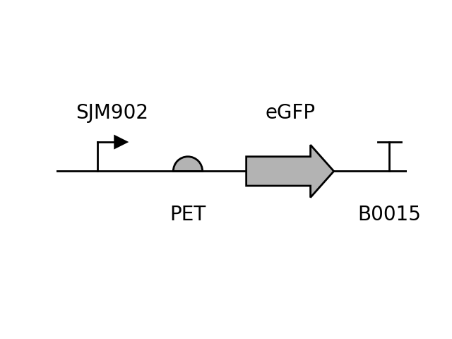
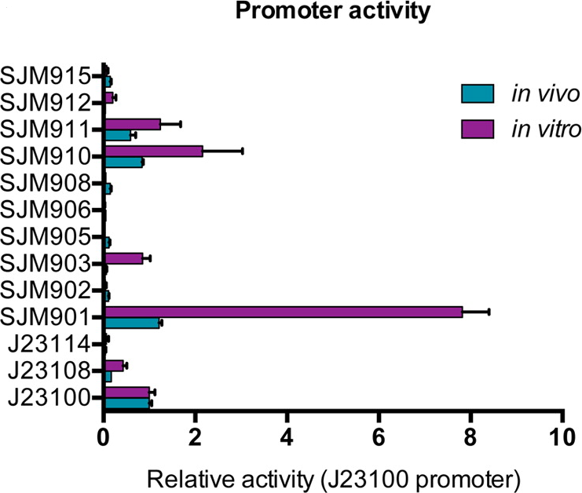

Ecoflex Promoter (weak)
SJM902
Data
| Parameter | Value | Unit |
|---|---|---|
| Strength | 0.11 | RPU |
| Strain | DH10B |
|---|---|
| Plasmid | pTU1-A |
| ori | pMB1 |
| Resistance | Clo |
Circuit Context
(better resolution)
Description
Part of the collection of constitutive promoters designed for the EcoFlex MoClo Kit created by randomizing the Anderson promoter collection and openly available on Addgene. This collection is remarkable for its characterization alongside libraries of standardized RBSs and terminators in vivo and in vitro (cell free). Consequentially, the behaviour of combinations of these parts can be more accurately predicted.
Characterization
Parts were characterized on E. coli DH10β in 2YT medium at 30 °C in 96-well plate reader assays. All measurements on this collection were normalized by the activity of the promoter BBa_J23100.
Sequences
Promoter
TTTACAGCTAGCTCAGTCCTAGGGATTATGCTAGC
Download
Reference
Moore, S. J. et al. EcoFlex: A Multifunctional MoClo Kit for E. coli Synthetic Biology. ACS Synth. Biol. 5, 1059–1069 (2016).
https://doi.org/10.1021/acssynbio.6b00031